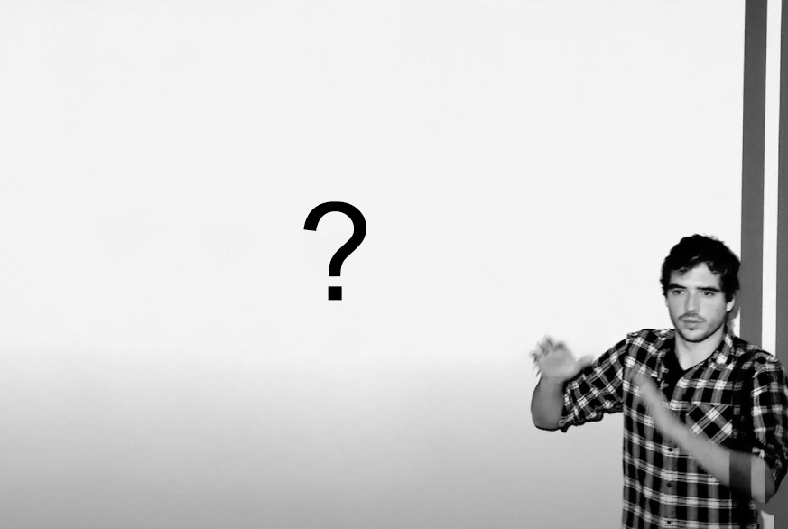

Talks
20 Jul 2023
Inequalities witnessing coherence, nonlocality, and contextuality
Paris
19 Jul 2023
Contextuality in logical form: Duality for transitive partial CABAs
Paris
18 Dec 2022
Causal contextuality and adaptive MBQC
Prague
21 Sep 2022
Contextuality as a resource: simulations, adaptivity comonad, and the (partial) algebraic-logical view
University College London
22 Jun 2022
Contextuality in logical form: Duality for transitive partial CABAs
Coimbra
20 Oct 2021
Free transformations in the resource theory of contextuality
QCQMB colloquium (Quantum Contextuality in Quantum Mechanics and Beyond)

7–11 Jun 2021
Closing Bell: Boxing black box correlations in the resource theory of contextuality
Gdańsk (online)
27 May 2021
Contextuality in logical form: Lindenbaum–Tarski duality for transitive partial CABA
Centre of Mathematics, Universidade do Minho, Braga (online)
17 May 2021
From Vorob'ev's theorem to monogamy of non-locality and local macroscopic averages
Prague (online)
14 Jan 2021
Partial Boolean algebras: The logic of contextuality
Dept of Mathematics, Universidade de Aveiro (online)
15 Jul 2020
The quantum monad on relational structures: towards quantum finite model theory?
Oxford–Cambridge Resources and Co-resources Meet-up
Dept of Computer Science, University of Oxford (online)
4 Jun 2020
Partial Boolean algebras and the logical exclusivity principle
Paris (online)
11 Dec 2019
Logic and quantum advantage
Lorentz Center, Leiden
15 Oct 2019
Acyclicity and Vorob'ev's theorem: deriving monogamy of non-locality and local macroscopic averages
LFCS Lab Lunch
School of Informatics, University of Edinburgh
4 July 2019
Resource theory of contextual behaviours
University of Oxford
25 Jun 2019
A comonadic view of simulation and quantum resources
Simon Fraser University, Vancouver
3 Jun 2019
Simulations of quantum resources and the degrees of contextuality (Early Idea)
University College London & Imperial College London
18 May 2019
Acyclicity and Vorob'ev's theorem
Prague
12 Apr 2019
Quantum vs classical: non-locality, contextuality, and informatic advantage
Universidade do Minho
26 Jun 2018
Contextuality as a resource yielding quantum advantage
Laboratoire d'Informatique de Grenoble, Universit\'e Grenoble Alpes
7 Jun 2018
The quantum monad: Towards quantum finite model theory
Dalhousie University, Halifax
19 May 2018
Contextuality and advantage in informatic tasks
Prague
20 Mar 2018
Contextuality as a resource
University of Edinburgh
14 Dec 2017
The quantum monad on relational structures
Simons Institute for the Theory of Computing, UC Berkeley
22 Nov 2017
Resource theory of contextuality
International Institute of Physics, Natal
10 Oct 2017
Monads, comonads, and quantum model theory without quantum logic
Dusko@60 – a conference in honour of 60th birthday of Dusko Pavlovic
University of Oxford
7 Sep 2017
The quantum monad on relational structures
National University of Singapore
22 Aug 2017
The quantum monad on relational structures
Aalborg Universitet
7 Jul 2017
Minimum resources for quantum contextuality
Radboud Universiteit, Nijmegen
13 Jun 2017
The contextual fraction and contextuality as a resource
Linnaeus University, Växjö
4 Jun 17
The contextual fraction and contextuality as a resource
Prague
8 Dec 2016
Towards a resource theory of contextuality
Simons Institute for the Theory of Computing, UC Berkeley
1 Dec 2016
Monogamy of nonlocality and macroscopic averages
Logic Lounge Seminar of the Logical Structures in Computation Programme
Simons Institute for the Theory of Computing, UC Berkeley
22 Jun 2016
The contextual fraction as a measure of contextuality
University College London
8 Jun 2016
Quantifying contextuality via linear programming
Strathclyde University, Glasgow
28 Apr 2016
Possibilities determine the structure of the no-signalling polytope
Workshop on Information and Processes (WIP 2016)
Fontainebleau, Université Paris Diderot (Paris 7)
12 Nov 2015
The sheaf-theoretic approach to non-locality and contextuality II
International Institute of Physics, Natal
5 Feb 2015
Monogamy of nonlocality and macroscopic averages
Quantum Dynamics Seminar
Department of Mathematics, Royal Holloway University of London
18 Oct 2014
The support lattice and the structure of the no-signalling polytope
University of Oxford
4 Jun 2014
On monogamy of non-locality and macroscopic averages: examples and preliminary results
Kyoto University
17 Dec 2013
A structural reason for monogamy and locality of average macroscopic behaviour
CIAPA, Costa Rica (Tulane University)
16 Sep 2013
Information dependence and independence: from quantum mechanics to databases and back
Quantitative Analysis of Algebraic Systems (QAIS) Project Workshop
Department of Informatics, Universidade do Minho, Braga
3 Jul 2013
Structural reason for monogamy
Workshop on Quantum Information and Foundations of Quantum Mechanics
University of British Columbia, Vancouver
7 May 2013
Sheaf-theoretic framework for non-locality and contextuality
Lunch Seminar of the Quantum Information Team
Télécom ParisTech
4 Apr 2013
Structural reason for monogamy and local macroscopic correlations
University of Nottingham
Apr 2013
Structural reason for monogamy relations (and local realism of some macroscopic correlations)
Groupe de travail Sémantique
Laboratoire PPS, Universit´ Paris Diderot (Paris 7)
6 Mar 2013
The logic of non-locality and quantum informatics
Physics Seminar
Centre of Physics, Universidade do Minho, Braga
13 Feb 2013
Structural analysis of monogamy and macroscopic correlations
Mathematical Institute, University of Oxford
13–14 Dec 2012
Topologies on the spectral presheaf and co/contra-variant duality
First Workshop on Quantum Toposophy
Radboud Universiteit, Nijmegen
9–14 Apr 2011
Unsharp values in the topos approach
Workshop on Quantum and Classical Information Flow
Bellairs Research Institute, Barbados (McGill University)
1 Dec 2010
The interval domain, values of physical quantities in a topos and space-time
Seminar on Aspects of Mathematical Foundations of Physics
Mathematical Institute, University of Oxford
30 Sep 2009
The topology of a decision problem
Seminário Diagonal (undergraduate seminar)
Department of Pure Mathematics, Universidade do Porto
14 Nov 2008
Mahler's measure
IV Simpósio Nacional / Jornadas de Iniciação Científica (Brazilian Research Initiation Symposium)
IMPA -- Inst. for Pure & Applied Maths, Rio de Janeiro
6 Sep 2008
Mahler's measure
Encontro Nacional do Programa Gulbenkian ‘Novos Talentos em Matemática’ 2007–2008 (National Meeting of `Young Talents in Mathematics' programme)
Luso
26 Mar 2008
Lehmer's conjecture
Seminário Diagonal (undergraduate seminar)
Department of Pure Mathematics, Universidade do Porto
Website by Catarina Soares Barbosa